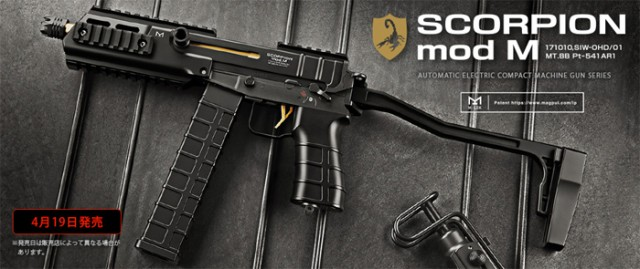

サバゲーにおいてのコンパクトマシンガン


アイアンサイトでも十分に戦えるがどっとサイトをつけたほうが戦いやすいと自分は思う。私が愛用するのはMP7でハンドガンを少し大きくしたくらいの大きさであまり重くなくアタッチメント付きで１ｋｇ前後で軽くて小さいため初心者にすごくおすすめ。値段もいろいろ込みで３万くらいなので始めるにあたり買いやすいサブマシンガン。基本的には、０．２５ｇのBB弾が使用されることが多い。MP7やスコーピオンなどはその大きさからまとめて「コンパクトマシンガン】と呼ばれる。この課題で生産が終了していることをしった。